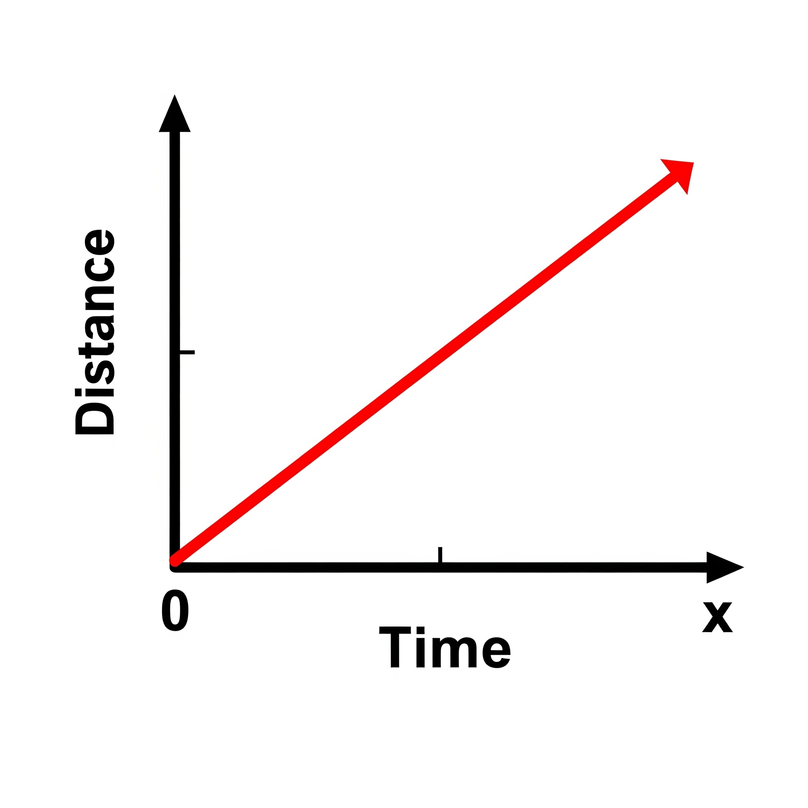

3.5 Uniform Motion
Motion is said to be uniform when an object covers equal distances in equal intervals of time, no matter how small the time intervals are. This indicates that the object moves at a constant speed and its velocity does not change with time.
Examples of Uniform Motion
- A train moving at a constant speed of 60 km/h along a straight track.
- A conveyor belt running at a steady pace in a factory.
- A car using cruise control to maintain a constant speed on a highway.
Characteristics of Uniform Motion
- The distance traveled per unit time remains the same.
- The velocity is constant, meaning no change in speed or direction.
- The acceleration is zero.
Graphical Representation
When we plot a distance-time graph for uniform motion, it appears as a straight line with a constant slope.
The slope of the line represents the speed of the object.
Equation for Uniform Motion
The relationship between distance, speed, and time in uniform motion is:
\[ v = \frac{d}{t} \]
- v = speed (m/s)
- d = distance traveled (m)
- t = time taken (s)
Real-Life Note
Perfect uniform motion rarely occurs in everyday life because external factors such as friction, air resistance, and uneven surfaces can cause variations in speed. However, many motions can be approximated as uniform for simplicity in calculations.